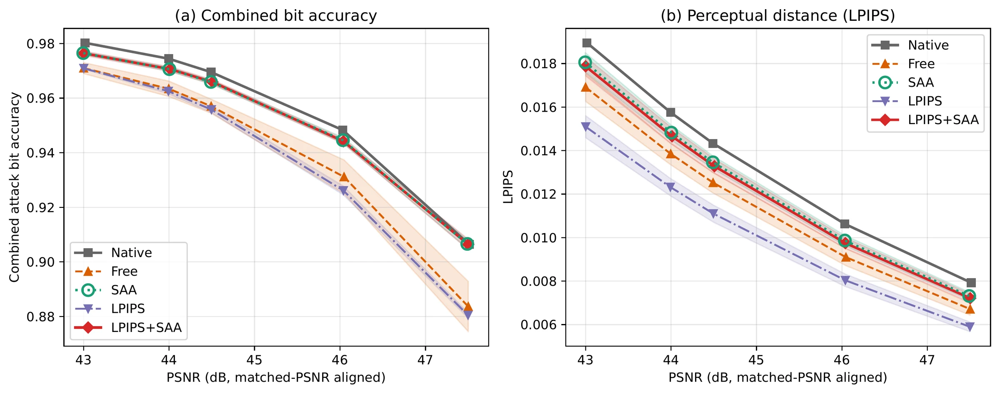

← 홈
ICLR 2027 · 심사 중 · 1저자
From Fixed JND to Learned Attenuation in Invisible Image Watermarking
+3.81pp
비트 정확도, 같은 삽입 계수
−5.37dB
기본 학습 맵의 PSNR 손실
+2.05dB
SAA + LPIPS로 회복
0.36–0.38pp
PSNR 일치 시 고정 JND 우위
01
Question
- 감쇠 맵(attenuation map)은 워터마크 잔차의 픽셀별 세기를 결정
- 학습형 맵이 고정 JND 맵보다 품질–강건성 trade-off가 좋은가?
- 삽입 계수가 아니라 왜곡(PSNR)을 같게 맞춰도 이점이 유지되는가?
02
Method

- Pixel Seal embedder · extractor 고정, U-Net이 감쇠 맵 예측
- SAA (Shape-Aligned Attenuation): 평균 정규화한 학습 맵을 JND 맵 형태에 정렬
- 선택적 LPIPS 지각 손실
- 공격: JPEG + crop + brightness 복합
- 비교 조건: 같은 계수 · 같은 PSNR · 같은 강건성
- SA-1B 1,000장 · 시드 3개 · paired bootstrap 신뢰구간
03
Findings

| 비교 조건 | 결과 |
|---|---|
| 같은 삽입 계수 | 기본 학습 맵: 비트 정확도 +3.81%p, PSNR −5.37 dB |
| + LPIPS + SAA | 정확도 0.31%p 손해로 PSNR +2.05 dB 회복 |
| 같은 PSNR | 이점 소멸, 고정 JND가 0.36–0.38%p 우위 (최고 목표치 제외) |
| 학습 맵끼리 | 강건성 차이는 SAA에서 발생 (+0.55–2.59%p) |
| 같은 강건성 | 학습 맵의 LPIPS 이점 대부분 소멸, 고정 JND가 가장 적은 왜곡 |
| MaskWM · WAM · VideoSeal | PSNR 일치 시 JPEG 공격 격차 1.2%p 미만으로 축소 (VideoSeal은 학습 맵 근소 우위) |
결론. 백본을 고정하면 학습형 감쇠 맵은 같은 왜곡에서 강건성도, 같은 강건성에서 품질도 고정 JND보다 뚜렷하게 낫지 않음 → 단일 계수 비교는 효과를 과대평가
04